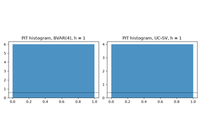
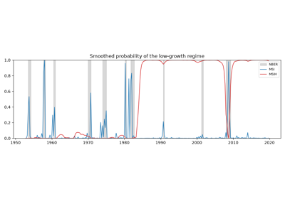
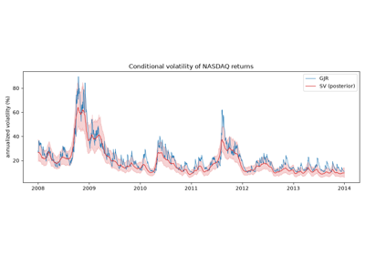
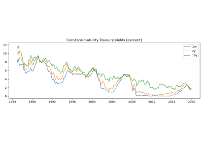
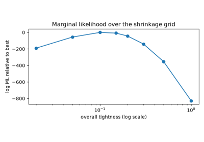
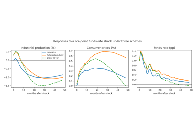
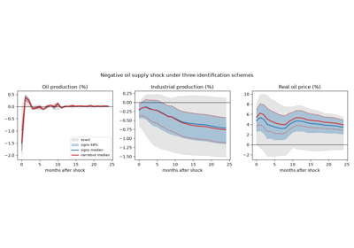
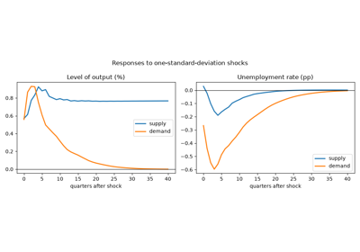
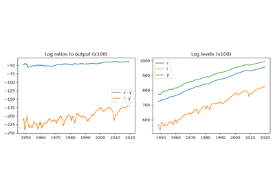

Examples#
Worked examples for cultivars, one script per model family. Each script is
executed at documentation-build time, so the figures and printed output are
produced by the code shown. Scripts are plain Python with reST in the
module docstring and in # %% cell comments; run any of them directly
with python examples/plot_<name>.py.

An inflation forecasting horse race, evaluated properly

Business-cycle regimes: Markov switching against the NBER chronology

Equity volatility: GARCH, asymmetric GARCH and stochastic volatility

Forecasting the Treasury yield curve with dynamic Nelson-Siegel

Forecasting with a medium-sized Bayesian VAR

Monetary policy without recursiveness: heteroskedasticity and proxies

Oil supply and demand shocks: sign, narrative and set identification

Supply and demand shocks with long-run restrictions

The great ratios: cointegration and a vector error-correction model